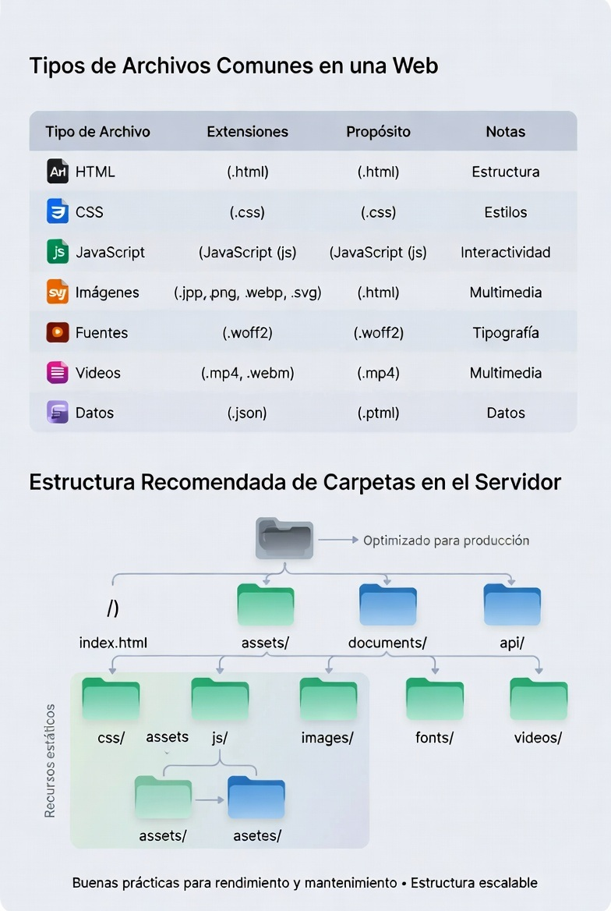

Integración de componentes software en páginas web (MF0951_2)
Pruebas de funcionalidades y optimización de páginas web (UF1306)
Unidad Didáctica 2. Efectos especiales en páginas web
Pregunta 1 Se creará una página web que abre otras ventanas con las que interactúa.
| Tipo de Archivo | Extensión Común | Función Principal | Ventajas | Desventajas |
|---|---|---|---|---|
| HTML | .html, .htm | Estructura y contenido básico de la página web. | Compatible con todos los navegadores, fácil de editar. | No incluye estilos ni interactividad por sí solo. |
| CSS | .css | Definir estilos visuales (colores, tipografía, diseño). | Separa diseño de contenido, reutilizable. | Depende de HTML para mostrarse. |
| JavaScript | .js | Añadir interactividad y funciones dinámicas. | Mejora la experiencia del usuario, gran flexibilidad. | Puede afectar el rendimiento si no se optimiza. |
| Imagen | .jpg, .png, .gif, .svg | Mostrar gráficos, fotos e iconos. | Mejora el atractivo visual, formatos optimizados para web. | Archivos pesados pueden ralentizar la carga. |
| Audio | .mp3, .wav, .ogg | Reproducir sonido o música. | Compatible con reproductores integrados en navegadores. | Puede aumentar el peso total de la página. |
| Video | .mp4, .webm, .ogg | Mostrar contenido audiovisual. | Alta capacidad de comunicación y engagement. | Requiere mayor ancho de banda. |
| Fuente Web | .woff, .woff2, .ttf | Personalizar tipografía. | Mejora la identidad visual. | Puede aumentar el tiempo de carga si no se optimiza. |
| Documento | Mostrar o descargar información en formato fijo. | Conserva el formato original, fácil de compartir. | No siempre es editable desde el navegador. |

Introduce una dirección web y pulsa el botón
Mensaje del hijo: